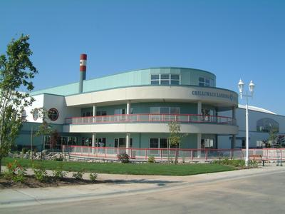

智利域（Chilliwack）一个水上康乐中心昨晚有女童在水池内遇溺，虽然家人随即将她救起，并由其他热心市民施以心肺复苏，但在送往医院后仍不幸离世。
上菲沙河谷区皇家骑警（UFVRD）表示，智利域骑警于周一晚上约8时接报，指智利域Landing Leisure Centre内的水上公园有一名4岁女童遇溺，智利域骑警、智利域消防局以及卑诗紧急医疗服务处（BC Emergency Health Services）均派出紧急救援人员赶赴现场。
警方指女童在遇溺后被家人从水中救起，热心市民随即对她施以心肺复苏，救援人员其后赶到现场并接手急救工作，惟女童被送往医院后仍不幸离世。
警方向离世女童的家人及朋友致以深切哀悼，受害者服务处（Victim Services）已向该家庭提供支援，警方也对伸出援手的热心市民以及竭尽全力挽救女童生命的急救人员表示感谢。